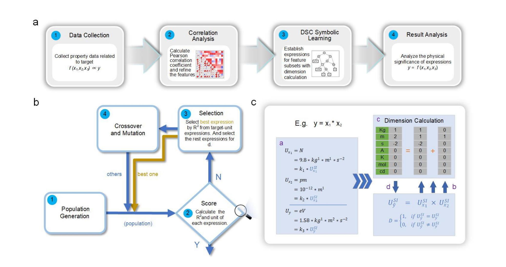

遗传编程 (GP)
传统的符号学习方法，用于生成数学表达式
通过符号学习得到表达式模型，具有单位计算和向量计算的双重功能

量纲同步计算（Dimension-synchronous-computation symbolic learning）的符号学习模型是在传统的符号学习的基础上，通过加入单位计算功能模块，并改进了底层的遗传编程（Genetic Programming, GP）为基因向量编程（Gene Vector Programming, GVP），使符号学习具有了单位计算和向量计算的双重功能。
传统的符号学习方法，用于生成数学表达式
改进的底层算法，支持向量计算功能
数据通过预处理之后，可直接输入到DSC符号学习中。预处理步骤包括数据清洗、归一化、特征提取等，确保输入数据的质量和一致性。
符号学习产生表达式通过遗传算法优化，最终得到表达式。评价的方式是通过单位与适应度双重评判，确保生成的表达式既符合物理意义又具有良好的拟合效果。
单位计算模块确保生成的表达式具有正确的物理量纲，避免出现量纲不一致的错误表达式，提高模型的物理可解释性。
内置单位计算模块，自动验证和保持表达式的量纲一致性，确保生成的模型具有物理意义。
通过GVP改进底层算法，支持向量运算，能够处理多维数据和复杂表达式。
采用单位与适应度双重评判标准，既保证物理正确性，又确保模型精度。
利用遗传算法的全局搜索能力，从大量可能的表达式中找到最优解。
直接输出可解释的数学表达式，而非黑盒模型，便于理解和应用。
生成的表达式符合物理规律和量纲要求，具有明确的物理意义。
| 特性 | 传统符号学习 | DSC符号学习 |
|---|---|---|
| 底层算法 | 遗传编程 (GP) | 基因向量编程 (GVP) |
| 单位计算 | 不支持 | 支持 |
| 向量计算 | 不支持 | 支持 |
| 量纲验证 | 无 | 自动验证 |
| 评判标准 | 适应度单一评判 | 单位与适应度双重评判 |
| 物理可解释性 | 一般 | 强 |
材料科学领域：适用于需要建立物理可解释模型的材料性能预测问题，如力学性能、热学性能、电学性能等的建模。
该模型特别适合以下场景：